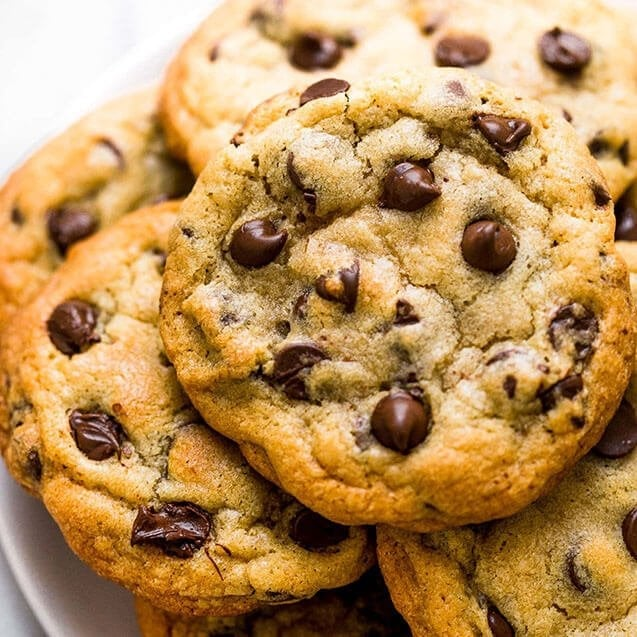

Chocolate Chip Cookies

Description
WOW chocolate
Ingredients
- 3 cups flour
- 1/2 tsp salt
- 1 tsp baking soda
- 1 tsp baking powder
- 3/4 cup white sugar
- 1 cup brown sugar
- 2 eggs
- 1 tbsp vanilla
- 1 cup room temperature butter
- 2 cups dark chocolate chips
- pinch of cinnamon
- 1/2 tsp coffee (yes)
Steps
- Preheat the oven to 350F.
- In a large bowl, cream together the butter, eggs and sugar. Mix in the coffee and vanilla.
- In another bowl, mix all other dry ingredients together, then add slowly to the creamed egg/sugar/butter mixture. You can include the chocolate chips here or mix them in after.
- Make 1 tbsp sized balls of cookies, spread 2 inches apart on a greased baking sheet.
- Bake for 10-15 mins (it will depend on your oven) and then let cool for 15 mins.